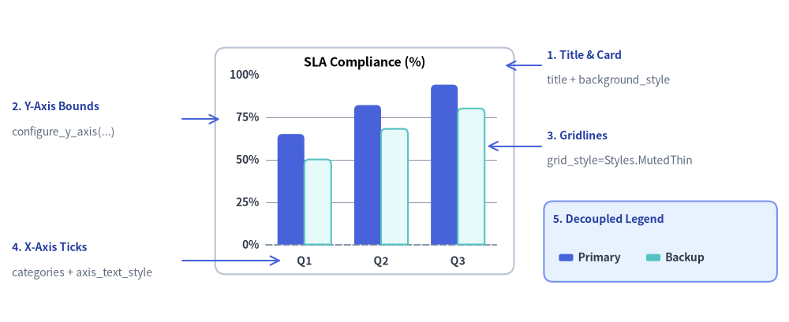
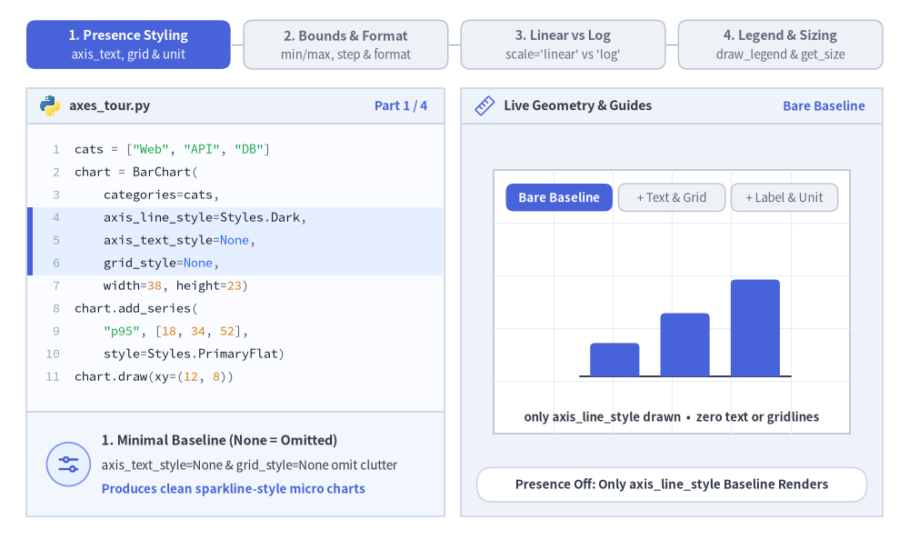
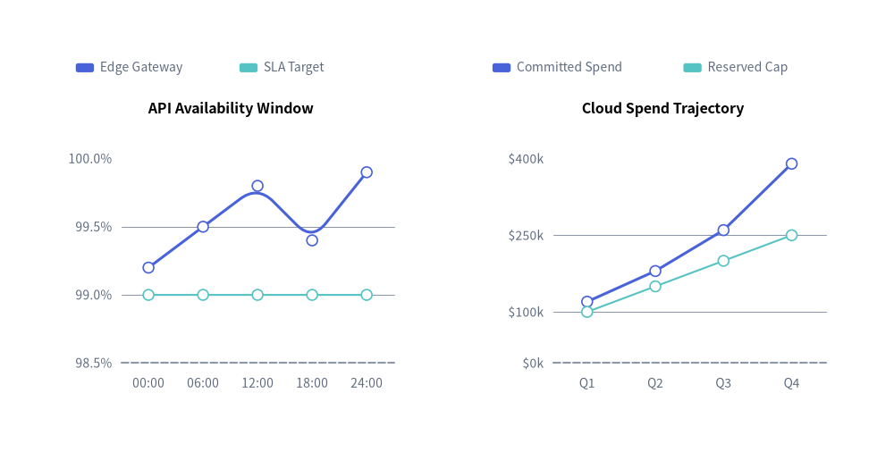
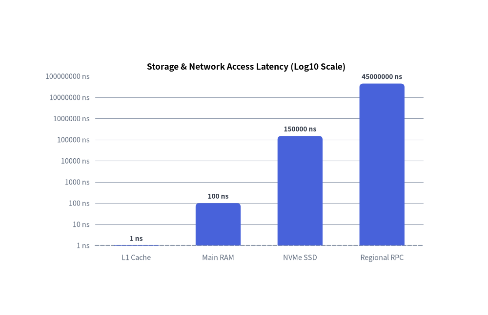
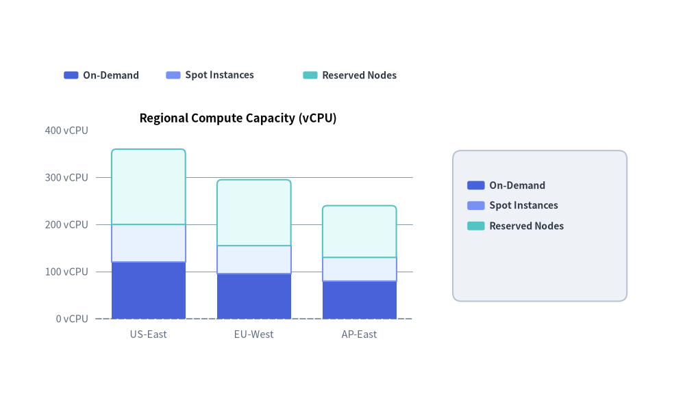

軸・スケール・凡例
すべての直交座標系チャート（BarChart、LineChart、AreaChart、ScatterChart）および複数系列・複数スライス型チャート（PieChart、RadarChart）は、座標軸のスケーリング、目盛り・単位フォーマット、分離配置型の凡例（デカップルされた凡例）、およびバウンディングボックス計測のための共通基盤を備えています。
すべての視覚的な軸要素は Drawlib の存在ベース（Style-as-Presence）のスタイリングモデルに従っており、定義域の上下限、グリッド線、目盛りフォーマッタ、凡例座標をそれぞれ独立して制御できます。

Source Code
from drawlib.canvas import save, setup
from drawlib.charts.bar import BarChart
from drawlib.lines import line
from drawlib.shapes import rectangle
from drawlib.styles import Colors, Styles
from drawlib.text import text
setup(width=132, height=54)
chart = BarChart(
categories=["Q1", "Q2", "Q3"],
axis_line_style=Styles.MutedDashed,
axis_text_style=Styles.DarkBold.patch(text_size=10.0),
grid_style=Styles.MutedThin,
background_style=Styles.Neutral.patch(shape_r=1.8, shape_fill_color=Colors.White, shape_line_color=Colors.Gray4),
width=50.0,
height=38.0,
title="SLA Compliance (%)",
title_style=Styles.BlackBold.patch(text_size=11.5),
bar_mode="group",
bar_r=0.8,
)
chart.add_series("Primary", [65.0, 82.0, 94.0], style=Styles.PrimaryFlat)
chart.add_series("Backup", [50.0, 68.0, 80.0], style=Styles.SecondaryNeutral)
chart.configure_y_axis(min_value=0, max_value=100, tick_step=25, format="{:.0f}%")
chart.draw(xy=(36.0, 8.0))
callout_title = Styles.DarkBold.patch(text_size=10.0, halign="left", text_color=Colors.Primary5)
callout_sub = Styles.Muted.patch(text_size=10.0, halign="left")
arrow_style = Styles.Primary.patch(shape_line_width=1.2)
# 1. Title & Background Card (Top-Right Callout)
line((90.5, 43.0), (84.5, 43.0), arrow_head="->", style=arrow_style)
text((91.5, 44.8), "1. Title & Card", style=callout_title)
text((91.5, 40.5), "title + background_style", style=callout_sub)
# 2. Y-Axis Bounds & Format (Top-Left Callout)
line((30.5, 34.0), (36.8, 34.0), arrow_head="->", style=arrow_style)
text((2.0, 36.2), "2. Y-Axis Bounds", style=callout_title)
text((2.0, 31.8), "configure_y_axis(...)", style=callout_sub)
# 3. Horizontal Gridlines (Middle-Right Callout)
line((90.5, 29.5), (81.5, 29.5), arrow_head="->", style=arrow_style)
text((91.5, 31.3), "3. Gridlines", style=callout_title)
text((91.5, 27.0), "grid_style=Styles.MutedThin", style=callout_sub)
# 4. X-Axis Category Ticks (Bottom-Left Callout)
line((30.5, 10.3), (47.0, 10.3), arrow_head="->", style=arrow_style)
text((2.0, 12.6), "4. X-Axis Ticks", style=callout_title)
text((2.0, 8.2), "categories + axis_text_style", style=callout_sub)
# 5. Decoupled Legend (Bottom-Right Box & Callout)
rectangle((110.5, 13.5), width=39.0, height=13.5, style=Styles.PrimaryNeutral.patch(shape_r=1.5))
text((92.5, 17.2), "5. Decoupled Legend", style=callout_title)
chart.draw_legend(
xy=(93.5, 10.8),
text_style=Styles.DarkBold.patch(text_size=10.0),
orientation="horizontal",
swatch_width=2.4,
swatch_height=1.2,
item_gap=3.0,
)
save()
1. 基本概念と基本的な使い方
直交座標系チャートや複数系列チャートは Drawlib の存在ベース（Style-as-Presence）のスタイリングモデルに従います。axis_line_style が座標ベースラインの基準となり、目盛りラベル（axis_text_style）やグリッド線（grid_style）は明示したときだけクリーンに有効化されます。また、定義域の範囲やフォーマッタ、"linear" と "log" のスケール切り替え（configure_y_axis / configure_x_axis）、分離配置された凡例（draw_legend + get_size）は、プロット領域のジオメトリを崩すことなく直交的に組み合わせられます。

Source Code
from __future__ import annotations
from drawlib.anim import Animation
from drawlib.canvas import save, setup
from drawlib.charts.bar import BarChart
from drawlib.charts.line import LineChart
from drawlib.icons import code as code_icons
from drawlib.icons import phosphor
from drawlib.lines import line
from drawlib.shapes import circle, rectangle
from drawlib.smartarts import SourceCode, SourceCodeStyles
from drawlib.styles import Styles
from drawlib.text import text
W, H = 138.0, 82.0
setup(width=W, height=H)
anim = Animation(fps=10.0, loop=0)
CODE_TEXT_SIZE = 10.0
PT_TO_CANVAS = W / 720.0
FONT_CANVAS = CODE_TEXT_SIZE * PT_TO_CANVAS
LINE_H = FONT_CANVAS * 1.8
PAD_Y = FONT_CANVAS * 1.2
CODE_STYLES = SourceCodeStyles.get("default", font_lang="en", text_size=CODE_TEXT_SIZE).patch(
box_style=Styles.Neutral.patch(shape_fill_color=(0, 0, 0, 0), shape_line_width=0),
)
PANE_HEADER = Styles.Neutral.patch(
shape_fill_color=(238, 243, 250),
shape_line_color=(203, 213, 225),
shape_line_width=1.2,
shape_r=0.0,
)
EDITOR_BODY = Styles.Neutral.patch(
shape_fill_color=(250, 252, 255),
shape_line_color=(203, 213, 225),
shape_line_width=1.2,
shape_r=0.0,
)
TAKEAWAY_BODY = Styles.Neutral.patch(
shape_fill_color=(242, 246, 253),
shape_line_color=(203, 213, 225),
shape_line_width=1.2,
shape_r=0.0,
)
STUDIO_BODY = Styles.Neutral.patch(
shape_fill_color=(239, 243, 249),
shape_line_color=(203, 213, 225),
shape_line_width=1.2,
shape_r=0.0,
)
PART_ITEMS = [
("1. Presence Styling", "axis_text, grid & unit"),
("2. Bounds & Format", "min/max, step & format"),
("3. Linear vs Log", "scale='linear' vs 'log'"),
("4. Legend & Sizing", "draw_legend & get_size"),
]
def draw_step_bar(active_part: int) -> None:
"""Draw top 4-part progress bar (active_part is 1..4)."""
pill_w = 31.0
pill_h = 7.4
gap = 2.0
start_x = 4.0 + pill_w / 2.0
cy = 75.2
for idx, (label, sublabel) in enumerate(PART_ITEMS, start=1):
cx = start_x + (idx - 1) * (pill_w + gap)
if idx > 1:
prev_cx = cx - (pill_w + gap)
line(
(prev_cx + pill_w / 2.0 + 0.2, cy),
(cx - pill_w / 2.0 - 0.2, cy),
style=Styles.PrimaryBold if idx <= active_part else Styles.MutedThin,
)
if idx == active_part:
st = Styles.PrimaryFlat.patch(shape_r=1.4)
tst = Styles.WhiteBold.patch(text_size=10.3)
sub_tst = Styles.White.patch(text_size=9.5)
elif idx < active_part:
st = Styles.PrimaryNeutral.patch(shape_r=1.4, shape_line_width=1.1)
tst = Styles.PrimaryBold.patch(text_size=10.3)
sub_tst = Styles.Primary.patch(text_size=9.5)
else:
st = Styles.Neutral.patch(shape_r=1.4, shape_line_width=1.1)
tst = Styles.MutedBold.patch(text_size=10.3)
sub_tst = Styles.Muted.patch(text_size=9.5)
rectangle((cx, cy), width=pill_w, height=pill_h, style=st)
text((cx, cy + 1.35), label, style=tst)
text((cx, cy - 1.55), sublabel, style=sub_tst)
def draw_left_pane(
active_part: int,
code_lines: list[str],
hl_range: tuple[int, int],
icon_fn: object,
summary_title: str,
summary_line1: str,
summary_line2: str,
) -> None:
"""Draw left Python code editor + bottom concept takeaway card."""
x0, w = 4.0, 63.5
cx = x0 + w / 2.0
top_y = 63.2
header_h = 5.4
editor_h = 43.8
takeaway_h = 15.8
rectangle((cx, top_y + header_h / 2.0), width=w, height=header_h, style=PANE_HEADER)
code_icons.python((x0 + 3.6, top_y + header_h / 2.0), width=3.4, style=Styles.Neutral)
text(
(x0 + 6.5, top_y + header_h / 2.0),
"axes_tour.py",
style=Styles.DarkBold.patch(text_size=10.2, halign="left"),
)
text(
(x0 + w - 2.6, top_y + header_h / 2.0),
f"Part {active_part} / 4",
style=Styles.PrimaryBold.patch(text_size=9.8, halign="right"),
)
rectangle((cx, top_y - editor_h / 2.0), width=w, height=editor_h, style=EDITOR_BODY)
hl_start, hl_end = hl_range
hl_top = top_y - PAD_Y - hl_start * LINE_H
hl_bot = top_y - PAD_Y - (hl_end + 1) * LINE_H
hl_cy = (hl_top + hl_bot) / 2.0
hl_h = hl_top - hl_bot
rectangle(
(cx, hl_cy),
width=w - 0.6,
height=hl_h,
style=Styles.Neutral.patch(shape_fill_color=(229, 239, 255), shape_line_width=0),
)
rectangle(
(x0 + 0.55, hl_cy),
width=0.9,
height=hl_h,
style=Styles.PrimaryFlat.patch(shape_line_width=0),
)
SourceCode.draw(
xy=(x0, top_y),
width=w,
code="\n".join(code_lines),
styles=CODE_STYLES,
code_lang="python",
show_linenum=True,
align="top_left",
)
take_cy = 3.6 + takeaway_h / 2.0
rectangle((cx, take_cy), width=w, height=takeaway_h, style=TAKEAWAY_BODY)
circle(
(x0 + 6.4, take_cy),
radius=3.3,
style=Styles.PrimaryNeutral.patch(shape_line_width=1.2),
)
icon_fn((x0 + 6.4, take_cy), width=3.8, style=Styles.PrimaryBold) # type: ignore[operator]
text(
(x0 + 11.4, take_cy + 3.6),
summary_title,
style=Styles.DarkBold.patch(text_size=10.4, halign="left"),
)
text(
(x0 + 11.4, take_cy - 0.2),
summary_line1,
style=Styles.Dark.patch(text_size=9.7, halign="left"),
)
text(
(x0 + 11.4, take_cy - 3.8),
summary_line2,
style=Styles.PrimaryBold.patch(text_size=9.6, halign="left"),
)
def draw_geometry_studio(param_badge: str, footer_caption: str) -> tuple[float, float]:
"""Draw right geometry lab shell, inner coordinate sheet with subtle grid, and footer."""
x0, w = 70.0, 64.0
cx = x0 + w / 2.0
top_y = 63.2
header_h = 5.4
body_h = 59.6
rectangle((cx, top_y + header_h / 2.0), width=w, height=header_h, style=PANE_HEADER)
phosphor.ruler((x0 + 3.6, top_y + header_h / 2.0), width=3.4, style=Styles.Primary)
text(
(x0 + 6.5, top_y + header_h / 2.0),
"Live Geometry & Guides",
style=Styles.DarkBold.patch(text_size=10.2, halign="left"),
)
text(
(x0 + w - 2.6, top_y + header_h / 2.0),
param_badge,
style=Styles.PrimaryBold.patch(text_size=9.6, halign="right"),
)
rectangle((cx, 3.6 + body_h / 2.0), width=w, height=body_h, style=STUDIO_BODY)
sheet_cx, sheet_cy = cx, 36.2
sheet_w, sheet_h = 54.0, 40.0
sx0, sy0 = sheet_cx - sheet_w / 2.0, sheet_cy - sheet_h / 2.0
rectangle(
(sheet_cx, sheet_cy),
width=sheet_w,
height=sheet_h,
style=Styles.Neutral.patch(
shape_fill_color=(255, 255, 255),
shape_line_color=(180, 194, 214),
shape_line_width=1.2,
),
)
g_st = Styles.MutedThin.patch(line_color=(232, 238, 246), line_width=0.8)
for gx in range(1, 6):
vx = sx0 + gx * (sheet_w / 6.0)
line((vx, sy0), (vx, sy0 + sheet_h), style=g_st)
for gy in range(1, 5):
vy = sy0 + gy * (sheet_h / 5.0)
line((sx0, vy), (sx0 + sheet_w, vy), style=g_st)
rectangle(
(cx, 8.4),
width=59.2,
height=5.2,
style=Styles.Neutral.patch(
shape_fill_color=(255, 255, 255),
shape_line_color=(203, 213, 225),
shape_line_width=1.1,
shape_r=2.4,
),
text=footer_caption,
text_style=Styles.DarkBold.patch(text_size=9.8),
)
return sheet_cx, sheet_cy
def draw_sub_pills(scx: float, labels: list[str], active_idx: int) -> None:
"""Draw 3-step tracker pills near the top of the studio sheet."""
pw, ph, pgap = 16.2, 4.2, 0.9
p_start = scx - (3 * pw + 2 * pgap) / 2.0 + pw / 2.0
for idx, lbl in enumerate(labels):
px = p_start + idx * (pw + pgap)
if idx == active_idx:
pst = Styles.PrimaryFlat.patch(shape_r=1.2)
ptst = Styles.WhiteBold.patch(text_size=9.5)
elif idx < active_idx:
pst = Styles.PrimaryNeutral.patch(shape_r=1.2, shape_line_width=1.0)
ptst = Styles.PrimaryBold.patch(text_size=9.5)
else:
pst = Styles.Neutral.patch(shape_r=1.2, shape_line_width=1.0)
ptst = Styles.Muted.patch(text_size=9.5)
rectangle((px, 52.0), width=pw, height=ph, style=pst, text=lbl, text_style=ptst)
AXIS_TXT = Styles.Dark.patch(text_size=9.6)
LEGEND_TXT = Styles.DarkBold.patch(text_size=9.6)
VAL_TXT = Styles.DarkBold.patch(text_size=9.5)
# =========================================================================
# Part 1: Presence Styling — Bare Baseline -> Text & Grid -> Label & Unit
# =========================================================================
PART1_STATES = [
(
"bare",
3.3,
[
'cats = ["Web", "API", "DB"]',
"chart = BarChart(",
" categories=cats,",
" axis_line_style=Styles.Dark,",
" axis_text_style=None,",
" grid_style=None,",
" width=38, height=23)",
"chart.add_series(",
' "p95", [18, 34, 52],',
" style=Styles.PrimaryFlat)",
"chart.draw(xy=(12, 8))",
],
(3, 5),
"Bare Baseline",
"Presence Off: Only axis_line_style Baseline Renders",
"1. Minimal Baseline (None = Omitted)",
"axis_text_style=None & grid_style=None omit clutter",
"Produces clean sparkline-style micro charts",
),
(
"text_grid",
3.3,
[
'cats = ["Web", "API", "DB"]',
"chart = BarChart(",
" categories=cats,",
" axis_line_style=Styles.Dark,",
" axis_text_style=Styles.Dark,",
" grid_style=Styles.MutedThin,",
" width=38, height=23)",
"chart.add_series(",
' "p95", [18, 34, 52],',
" style=Styles.PrimaryFlat)",
"chart.draw(xy=(12, 8))",
],
(4, 5),
"axis_text + grid",
"Opt-In Styles: Ticks, Category Names & Gridlines Appear",
"2. Opt-In Ticks & Gridlines",
"Passing axis_text_style enables X/Y tick typography",
"Passing grid_style draws horizontal reference lines",
),
(
"label_unit",
3.5,
[
"chart = BarChart(",
" categories=cats, ...,",
" axis_text_style=Styles.Dark,",
" grid_style=Styles.MutedThin)",
"chart.add_series(",
' "p95", [18, 34, 52],',
" style=Styles.PrimaryFlat)",
"chart.configure_y_axis(",
' label="Latency",',
' unit="ms")',
"chart.draw(xy=(12, 8))",
],
(7, 9),
'unit = "ms"',
'configure_y_axis(label="Latency", unit="ms") Appends Units',
"3. Axis Label & Unit Suffix (configure_y_axis)",
'unit="ms" formats every Y tick as "0 ms .. 60 ms"',
"Stores label metadata cleanly on chart.y_axis",
),
]
for p1_idx, (p_mode, dur, code_1, hl_rng, badge_txt, foot_txt, s_t, s_1, s_2) in enumerate(PART1_STATES):
with anim.frame(duration=dur):
draw_step_bar(1)
draw_left_pane(1, code_1, hl_rng, phosphor.sliders_horizontal, s_t, s_1, s_2)
scx, scy = draw_geometry_studio(badge_txt, foot_txt)
draw_sub_pills(scx, ["Bare Baseline", "+ Text & Grid", "+ Label & Unit"], p1_idx)
cx0, cy0, cw, ch = 85.0, 21.8, 38.0, 22.5
chart = BarChart(
categories=["Web", "API", "DB"],
axis_line_style=Styles.Dark.patch(line_width=1.4),
axis_text_style=None if p_mode == "bare" else AXIS_TXT,
grid_style=None if p_mode == "bare" else Styles.MutedThin,
width=cw,
height=ch,
bar_r=0.7,
)
chart.add_series("p95", [18.0, 34.0, 52.0], style=Styles.PrimaryFlat)
if p_mode == "label_unit":
chart.configure_y_axis(label="Latency", unit="ms")
chart.draw(xy=(cx0, cy0))
if p_mode == "bare":
text(
(scx, 18.6),
"only axis_line_style drawn • zero text or gridlines",
style=Styles.DarkBold.patch(text_size=9.5),
)
elif p_mode == "text_grid":
text(
(scx, 18.6),
"ticks (0..60), categories & horizontal gridlines active",
style=Styles.PrimaryBold.patch(text_size=9.5),
)
else:
# Rotated axis label callout + unit highlight
text(
(78.2, 33.8),
"Latency",
style=Styles.PrimaryBold.patch(text_size=9.5, angle=90),
)
text(
(scx, 18.6),
'unit="ms" formats Y ticks: "0 ms" .. "60 ms"',
style=Styles.PrimaryBold.patch(text_size=9.5),
)
# =========================================================================
# Part 2: Bounds & Format — Auto Nice Numbers -> min/max+step -> format
# =========================================================================
PART2_STATES = [
(
"auto_nice",
3.3,
[
'cats = ["T1", "T2", "T3", "T4"]',
"chart = LineChart(",
" categories=cats,",
" axis_line_style=Styles.Dark,",
" axis_text_style=Styles.Dark,",
" grid_style=Styles.MutedThin,",
" show_points=True)",
"chart.add_series(",
' "SLA", [42, 68, 61, 86],',
" style=Styles.PrimaryFlat)",
"chart.draw(xy=(12, 8))",
],
(7, 10),
"Auto Nice Ticks",
"Default Auto-Scale: Nice Numbers Snaps Data [42..86] -> 40..90",
"Auto Nice Numbers Algorithm",
"Selects human-friendly 1, 2, 5 * 10^k step intervals",
"Data [42..86] snaps automatically to 40..90 (step 10)",
),
(
"min_max_step",
3.3,
[
"chart = LineChart(",
" categories=cats, ...,",
" show_points=True)",
"chart.add_series(",
' "SLA", [42, 68, 61, 86],',
" style=Styles.PrimaryFlat)",
"chart.configure_y_axis(",
" min_value=0,",
" max_value=100,",
" tick_step=25)",
"chart.draw(xy=(12, 8))",
],
(6, 9),
"0..100, step=25",
"min_value=0, max_value=100, tick_step=25 Locks Full Domain",
"Explicit Domain & Step (min/max, tick_step)",
"Pins Y-axis domain from 0 to 100 in 25-unit steps",
"Prevents misleading zoomed-in axes across charts",
),
(
"ticks_fmt",
3.5,
[
"chart = LineChart(",
" categories=cats, ...,",
" show_points=True)",
"chart.add_series(",
' "SLA", [42, 68, 61, 86],',
" style=Styles.PrimaryFlat)",
"chart.configure_y_axis(",
" ticks=[0, 50, 80, 100],",
' format="{:.0f}%",',
")",
"chart.draw(xy=(12, 8))",
],
(6, 9),
'ticks + "{:.0f}%"',
'Custom ticks=[0, 50, 80, 100] & format="{:.0f}%" Thresholds',
"Explicit Ticks & Formatters (ticks, format)",
"ticks=[...] places exact non-uniform SLA thresholds",
"format accepts Python format strings or callables",
),
]
for p2_idx, (b_mode, dur, code_2, hl_rng, badge_txt, foot_txt, s_t, s_1, s_2) in enumerate(PART2_STATES):
with anim.frame(duration=dur):
draw_step_bar(2)
draw_left_pane(2, code_2, hl_rng, phosphor.ruler, s_t, s_1, s_2)
scx, scy = draw_geometry_studio(badge_txt, foot_txt)
draw_sub_pills(scx, ["Auto Nice", "min/max + step", "ticks + format"], p2_idx)
cx0, cy0, cw, ch = 84.0, 21.8, 39.0, 23.5
chart = LineChart(
categories=["T1", "T2", "T3", "T4"],
axis_line_style=Styles.MutedDashed,
axis_text_style=AXIS_TXT,
grid_style=Styles.MutedThin,
width=cw,
height=ch,
show_points=True,
smooth=True,
)
chart.add_series("SLA", [42.0, 68.0, 61.0, 86.0], style=Styles.PrimaryFlat, line_width=2.0)
if b_mode == "min_max_step":
chart.configure_y_axis(min_value=0, max_value=100, tick_step=25)
elif b_mode == "ticks_fmt":
chart.configure_y_axis(ticks=[0, 50, 80, 100], format="{:.0f}%")
chart.draw(xy=(cx0, cy0))
if b_mode == "auto_nice":
text(
(scx, 18.6),
"auto bounds: 40..90 • Nice Numbers step = 10",
style=Styles.DarkBold.patch(text_size=9.5),
)
elif b_mode == "min_max_step":
text(
(scx, 18.6),
"pinned bounds: 0..100 • uniform tick_step = 25",
style=Styles.PrimaryBold.patch(text_size=9.5),
)
else:
text(
(scx, 18.6),
'custom SLA ticks: 0%, 50%, 80%, 100% • format="{:.0f}%"',
style=Styles.PrimaryBold.patch(text_size=9.5),
)
# =========================================================================
# Part 3: Linear vs Log — [1, 15, 500] across ["L1", "SSD", "Cloud"]
# =========================================================================
PART3_STATES = [
(
"linear",
3.3,
[
'cats = ["L1", "SSD", "Cloud"]',
"chart = LineChart(",
" categories=cats, ...,",
" value_text_style=Styles.Dark,",
" show_points=True)",
"chart.add_series(",
' "Read", [1, 15, 500],',
" style=Styles.PrimaryFlat)",
"chart.configure_y_axis(",
' scale="linear")',
"chart.draw(xy=(12, 8))",
],
(8, 9),
'scale="linear"',
'scale="linear": [1, 15] Crushed Flat Against 500 Max!',
'Linear Scale (scale="linear")',
"500 dominates the 0..500 span; 1 & 15 hug zero",
"Small latencies become indistinguishable near base",
),
(
"log",
3.3,
[
'cats = ["L1", "SSD", "Cloud"]',
"chart = LineChart(",
" categories=cats, ...,",
" value_text_style=Styles.Dark,",
" show_points=True)",
"chart.add_series(",
' "Read", [1, 15, 500],',
" style=Styles.PrimaryFlat)",
"chart.configure_y_axis(",
' scale="log", unit="ms")',
"chart.draw(xy=(12, 8))",
],
(8, 9),
'scale="log"',
'scale="log": Powers of 10 (1..1000) Cleanly Separated!',
'Log10 Scale (scale="log")',
"Snaps bounds to powers of 10 (1, 10, 100, 1000)",
"1 ms, 15 ms & 500 ms separate cleanly across plot",
),
(
"log_custom",
3.5,
[
"chart = LineChart(",
' categories=["L1", "SSD",',
' "Cloud"], ...)',
"chart.add_series(",
' "Read", [1, 15, 500],',
" style=Styles.PrimaryFlat)",
"chart.configure_y_axis(",
' scale="log", unit="ms",',
" show_grid=False,",
" line_style=Styles.PrimaryBold)",
"chart.draw(xy=(12, 8))",
],
(6, 9),
"show_grid=False",
"Per-Axis Overrides: show_grid=False & Custom line_style",
"Per-Axis Grid & Baseline Control",
"show_grid=False suppresses horizontal gridlines",
"line_style overrides baseline stroke per axis",
),
]
for p3_idx, (s_mode, dur, code_3, hl_rng, badge_txt, foot_txt, s_t, s_1, s_2) in enumerate(PART3_STATES):
with anim.frame(duration=dur):
draw_step_bar(3)
draw_left_pane(3, code_3, hl_rng, phosphor.chart_line_up, s_t, s_1, s_2)
scx, scy = draw_geometry_studio(badge_txt, foot_txt)
draw_sub_pills(scx, ['scale="linear"', 'scale="log"', "Grid & Stroke"], p3_idx)
cx0, cy0, cw, ch = 85.5, 21.8, 38.5, 23.5
chart = LineChart(
categories=["L1", "SSD", "Cloud"],
axis_line_style=Styles.MutedDashed,
axis_text_style=AXIS_TXT,
grid_style=Styles.MutedThin,
value_text_style=VAL_TXT if s_mode != "linear" else None,
width=cw,
height=ch,
show_points=True,
)
chart.add_series("Read", [1.0, 15.0, 500.0], style=Styles.PrimaryFlat, line_width=2.0)
if s_mode == "linear":
chart.configure_y_axis(scale="linear")
elif s_mode == "log":
chart.configure_y_axis(scale="log", unit="ms")
else:
chart.configure_y_axis(
scale="log",
unit="ms",
show_grid=False,
line_style=Styles.PrimaryBold.patch(line_width=1.8),
)
chart.draw(xy=(cx0, cy0))
if s_mode == "linear":
# Point out 1 & 15 crushed near 0
line((101.5, 34.0), (101.5, 28.8), arrow_head="->", style=Styles.DangerBold.patch(line_width=1.3))
text(
(95.8, 35.8),
"1 & 15 crushed",
style=Styles.DangerBold.patch(text_size=9.5, halign="left"),
)
text(
(scx, 18.6),
"linear 0..500 crushes L1 (1) & SSD (15) near baseline",
style=Styles.DangerBold.patch(text_size=9.5),
)
elif s_mode == "log":
text(
(scx, 18.6),
"log10 powers of 10 (1..1000 ms) separate all 3 tiers!",
style=Styles.PrimaryBold.patch(text_size=9.5),
)
else:
text(
(scx, 18.6),
"show_grid=False • line_style=Styles.PrimaryBold",
style=Styles.PrimaryBold.patch(text_size=9.5),
)
# =========================================================================
# Part 4: Legend & Sizing — Horizontal -> Vertical+get_size -> s2.show=False
# =========================================================================
PART4_STATES = [
(
"horiz_leg",
3.3,
[
"chart = BarChart(",
' categories=["US", "EU", "AP"],',
" axis_line_style=Styles.Dark,",
" ...)",
's1 = chart.add_series("App", ...)',
's2 = chart.add_series("Peak", ...)',
"chart.draw(xy=(10, 8))",
"chart.draw_legend(",
" xy=(15, 34),",
" text_style=Styles.DarkBold,",
' orientation="horizontal")',
],
(7, 10),
"horiz legend",
'draw_legend(orientation="horizontal") Flows Right From xy',
"Decoupled Horizontal Legend",
"xy sets the middle-left start point; items flow +X",
"Placed freely above plot without shrinking bars",
),
(
"vert_size",
3.3,
[
"chart = BarChart(",
' categories=["US", "EU", "AP"],',
" width=31, height=22, ...)",
's1 = chart.add_series("App", ...)',
's2 = chart.add_series("Peak", ...)',
"chart.draw(xy=(8, 8))",
"w, h = chart.get_size()",
"chart.draw_legend(",
" xy=(8 + w + 2.5, 8 + h - 3),",
" text_style=Styles.DarkBold,",
' orientation="vertical")',
],
(6, 10),
"get_size() + vert",
"w, h = chart.get_size() Aligns Vertical Sidebar Legend",
"Sidebar Alignment via chart.get_size()",
"Returns (width, height) in canvas coordinates",
'orientation="vertical" steps downward from top-left',
),
(
"hide_s2",
3.5,
[
"chart = BarChart(",
' categories=["US", "EU", "AP"],',
" width=31, height=22, ...)",
"s1 = chart.add_series(",
' "App", [32, 44, 38], ...)',
"s2 = chart.add_series(",
' "Peak", [65, 88, 76], ...)',
"# Hide s2; Y-axis stays 0..100!",
"s2.show = False",
"chart.draw(xy=(8, 8))",
"chart.draw_legend(...)",
],
(7, 8),
"s2.show = False",
"s2.show = False: Hides Bars & Legend While Locking Bounds!",
"Bound-Preserving Visibility (s2.show = False)",
"Omits Peak from plot & legend; keeps App X-slots",
"Y-axis domain stays locked at 0..100 (no jump!)",
),
]
for p4_idx, (l_mode, dur, code_4, hl_rng, badge_txt, foot_txt, s_t, s_1, s_2) in enumerate(PART4_STATES):
with anim.frame(duration=dur):
draw_step_bar(4)
draw_left_pane(4, code_4, hl_rng, phosphor.layout, s_t, s_1, s_2)
scx, scy = draw_geometry_studio(badge_txt, foot_txt)
draw_sub_pills(scx, ["Horiz Legend", "Vert + get_size()", "s2.show = False"], p4_idx)
if l_mode == "horiz_leg":
cx0, cy0, cw, ch = 84.0, 21.5, 37.0, 21.5
chart = BarChart(
categories=["US", "EU", "AP"],
axis_line_style=Styles.MutedDashed,
axis_text_style=AXIS_TXT,
grid_style=Styles.MutedThin,
width=cw,
height=ch,
bar_mode="group",
bar_r=0.6,
)
chart.add_series("App", [32.0, 44.0, 38.0], style=Styles.PrimaryFlat)
chart.add_series("Peak", [65.0, 88.0, 76.0], style=Styles.SecondaryNeutral)
chart.draw(xy=(cx0, cy0))
lx, ly = 93.0, 45.8
chart.draw_legend(
xy=(lx, ly),
text_style=LEGEND_TXT,
orientation="horizontal",
swatch_width=2.4,
swatch_height=1.2,
item_gap=3.5,
)
circle((lx - 1.5, ly), radius=0.75, style=Styles.DangerFlat)
text(
(scx, 18.6),
'orientation="horizontal" • middle-left xy flows +X',
style=Styles.DarkBold.patch(text_size=9.5),
)
else:
cx0, cy0, cw, ch = 77.2, 21.6, 31.0, 21.0
chart = BarChart(
categories=["US", "EU", "AP"],
axis_line_style=Styles.MutedDashed,
axis_text_style=AXIS_TXT,
grid_style=Styles.MutedThin,
width=cw,
height=ch,
bar_mode="group",
bar_r=0.6,
)
chart.add_series("App", [32.0, 44.0, 38.0], style=Styles.PrimaryFlat)
s2 = chart.add_series("Peak", [65.0, 88.0, 76.0], style=Styles.SecondaryNeutral)
if l_mode == "hide_s2":
s2.show = False
chart.draw(xy=(cx0, cy0))
w_c, h_c = chart.get_size()
card_cx = cx0 + w_c + 10.2
rectangle(
(card_cx, cy0 + h_c / 2.0 + 1.0),
width=16.5,
height=13.0,
style=Styles.Neutral.patch(shape_r=1.2, shape_line_width=1.0),
)
lx, ly = card_cx - 6.2, cy0 + h_c / 2.0 + 4.2
chart.draw_legend(
xy=(lx, ly),
text_style=LEGEND_TXT,
orientation="vertical",
swatch_width=2.4,
swatch_height=1.2,
)
if l_mode == "vert_size":
circle((lx - 1.3, ly), radius=0.75, style=Styles.DangerFlat)
line(
(cx0, 44.4),
(cx0 + w_c, 44.4),
arrow_head="<->",
style=Styles.PrimaryBold.patch(line_width=1.3),
)
text(
(cx0 + w_c / 2.0, 46.6),
"w = 31 (get_size)",
style=Styles.PrimaryBold.patch(text_size=9.5),
)
text(
(scx, 18.6),
"w, h = chart.get_size() • vertical legend at x0 + w",
style=Styles.PrimaryBold.patch(text_size=9.5),
)
else:
text(
(scx, 18.6),
"s2.show=False • Peak hidden, Y-axis locked at 0..100!",
style=Styles.PrimaryBold.patch(text_size=9.5),
)
save()
- 存在ベースの軸スタイリング（
axis_text_style,grid_style,unit）: 任意のスタイル引数を省略すればスパークラインのようなミニマルなベースラインだけを描画でき、axis_text_styleやgrid_styleを指定して目盛りやグリッド線を有効化できます。またconfigure_y_axis(label=..., unit=...)で軸ラベルや単位サフィックスを付加できます。 - 定義域の範囲・目盛り間隔・フォーマット（
min_value,max_value,tick_step,format）: 自動の Nice Numbers 目盛りを明示的な上下限、固定tick_stepやticks=[...]リスト、Python フォーマット文字列（"{:.0f}%"）や呼び出し可能オブジェクト（callable）で上書きできます。 - 線形スケールと対数スケール（
scale="linear"vs."log"）:scale="log"に切り替えることで、複数桁にまたがるデータを 10 の累乗ごとに明瞭に分離して描画でき、軸単位でのshow_gridやline_styleの上書きも行えます。 - 分離配置された凡例と寸法取得（
draw_legend,get_size,.show）:w, h = chart.get_size()を活用して横並び・縦並びの凡例を任意の場所に配置でき、series.show = Falseを切り替えても軸の上下限を固定したまま維持できます。
2. カスタム軸範囲・目盛り間隔・数値フォーマット
直交座標系チャートは chart.configure_x_axis(...) と chart.configure_y_axis(...)（内部の Axis モデルを操作）を公開しており、定義域の範囲（min_value、max_value）、明示的な目盛り（ticks または tick_step）、フォーマット文字列や関数（format）、単位サフィックス（unit）、および軸タイトル（label）を柔軟にカスタマイズできます。
from drawlib.canvas import save, setup
from drawlib.charts.line import LineChart
from drawlib.styles import Styles
setup(width=118, height=62)
# Left Chart: Explicit tick_step, format string, and unit suffix
sla_chart = LineChart(
axis_line_style=Styles.MutedDashed,
categories=["00:00", "06:00", "12:00", "18:00", "24:00"],
axis_text_style=Styles.Muted.patch(text_size=10.0),
grid_style=Styles.MutedThin,
width=49.0,
height=42.0,
title="API Availability Window",
title_style=Styles.BlackBold.patch(text_size=11.5),
smooth=True,
show_points=True,
)
sla_chart.add_series("Edge Gateway", [99.2, 99.5, 99.8, 99.4, 99.9], style=Styles.PrimaryFlat, line_width=2.2)
sla_chart.add_series("SLA Target", [99.0, 99.0, 99.0, 99.0, 99.0], style=Styles.SecondaryNeutral, line_style="dashed")
sla_chart.configure_y_axis(
min_value=98.5,
max_value=100.0,
tick_step=0.5,
format="{:.1f}%",
label="Uptime (%)",
)
sla_chart.draw(xy=(6.0, 8.0))
sla_chart.draw_legend(xy=(10.0, 53.0), text_style=Styles.Muted.patch(text_size=10.0), orientation="horizontal")
# Right Chart: Custom callable formatter and explicit ticks list
cost_chart = LineChart(
axis_line_style=Styles.MutedDashed,
categories=["Q1", "Q2", "Q3", "Q4"],
axis_text_style=Styles.Muted.patch(text_size=10.0),
grid_style=Styles.MutedThin,
width=49.0,
height=42.0,
title="Cloud Spend Trajectory",
title_style=Styles.BlackBold.patch(text_size=11.5),
show_points=True,
)
cost_chart.add_series("Committed Spend", [120, 180, 260, 390], style=Styles.PrimaryFlat, line_width=2.2)
cost_chart.add_series("Reserved Cap", [100, 150, 200, 250], style=Styles.SecondaryNeutral, line_style="dotted")
cost_chart.configure_y_axis(
ticks=[0, 100, 250, 400],
format=lambda v: f"${v:,.0f}k",
label="Quarterly Cost (USD)",
)
cost_chart.draw(xy=(63.0, 8.0))
cost_chart.draw_legend(xy=(65.0, 53.0), text_style=Styles.Muted.patch(text_size=10.0), orientation="horizontal")
save()

3. 線形スケール（Nice Numbers）と対数スケール（scale="log"）
各 Axis は scale パラメータによって 2 種類のスケーリングエンジンをサポートしています。
scale="linear"（デフォルト）:tick_stepとticksが省略された場合、Nice Numbers アルゴリズムを用いてデータ範囲に応じた読みやすい目盛り間隔（1, 2, 5 * 10^k）を自動選択します。scale="log": 正の数値を常用対数軸（log10）にマッピングします。境界値は自動的に 10 の累乗（10^0, 10^1, 10^2, ...）へスナップし、範囲が 2 桁以下（<= 2オーダー）の場合は中間目盛り（1, 2, 5 * 10^k）も自動生成されます。
from drawlib.canvas import save, setup
from drawlib.charts.bar import BarChart
from drawlib.styles import Styles
setup(width=105, height=68)
chart = BarChart(
axis_line_style=Styles.MutedDashed,
categories=["L1 Cache", "Main RAM", "NVMe SSD", "Regional RPC"],
axis_text_style=Styles.Muted.patch(text_size=10.5),
grid_style=Styles.MutedThin,
value_text_style=Styles.DarkBold.patch(text_size=10.0),
value_format="{:g} ns",
width=82.0,
height=46.0,
title="Storage & Network Access Latency (Log10 Scale)",
title_style=Styles.BlackBold.patch(text_size=12.5),
bar_width_ratio=0.55,
bar_r=0.8,
)
chart.add_series("Median Read Latency", [1.0, 100.0, 150000.0, 45000000.0], style=Styles.PrimaryFlat)
chart.configure_y_axis(
scale="log",
unit="ns",
label="Access Time in Nanoseconds (log10)",
)
chart.draw(xy=(12.0, 10.0))
save()

4. 分離配置された凡例（draw_legend）とバウンディング寸法の取得（get_size）
Drawlib では固定的なチャート枠内に凡例を押し込めるのではなく、chart.draw_legend(...) によって凡例描画を本体から分離しています。キャンバス上の任意の場所に横並び（horizontal）または縦並び（vertical）の凡例を配置し、swatch_width、swatch_height、item_gap を調整できるほか、chart.get_size() -> (width, height) を呼び出してチャートの外形寸法に合わせたサイドバーやカードへの整列が可能です。
from drawlib.canvas import save, setup
from drawlib.charts.bar import BarChart
from drawlib.shapes import rectangle
from drawlib.styles import Styles
setup(width=118, height=68)
chart = BarChart(
categories=["US-East", "EU-West", "AP-East"],
axis_line_style=Styles.MutedDashed,
axis_text_style=Styles.Muted.patch(text_size=10.5),
grid_style=Styles.MutedThin,
width=66.0,
height=42.0,
title="Regional Compute Capacity (vCPU)",
title_style=Styles.BlackBold.patch(text_size=12.0),
bar_mode="stack",
bar_r=0.8,
)
chart.add_series("On-Demand", [120, 95, 80], style=Styles.PrimaryFlat)
chart.add_series("Spot Instances", [80, 60, 50], style=Styles.PrimaryNeutral)
chart.add_series("Reserved Nodes", [160, 140, 110], style=Styles.SecondaryNeutral)
chart.configure_y_axis(unit="vCPU")
chart_x, chart_y = 8.0, 8.0
chart.draw(xy=(chart_x, chart_y))
# 1. Horizontal Legend placed above the chart plot area
chart.draw_legend(
xy=(11.0, 55.0),
orientation="horizontal",
item_gap=3.5,
swatch_width=2.5,
swatch_height=1.3,
text_style=Styles.DarkBold.patch(text_size=10.0),
)
# 2. Vertical Legend inside a Sidebar Card aligned via chart.get_size()
chart_w, chart_h = chart.get_size()
legend_card_cx = chart_x + chart_w + 19.0
rectangle(
xy=(legend_card_cx, chart_y + chart_h / 2.0),
width=30.0,
height=26.0,
style=Styles.Neutral.patch(shape_r=1.5),
)
chart.draw_legend(
xy=(legend_card_cx - 12.5, chart_y + chart_h / 2.0 + 7.0),
text_style=Styles.DarkBold.patch(text_size=10.0),
orientation="vertical",
swatch_width=3.0,
swatch_height=1.5,
)
save()

5. API リファレンス
軸の設定（configure_x_axis / configure_y_axis と Axis）
BarChart、LineChart、AreaChart、ScatterChart で利用可能です（内部の Axis インスタンスを返します）。
chart.configure_x_axis(
scale: Literal["linear", "log"] | None = None,
min_value: float | None = None,
max_value: float | None = None,
ticks: list[float] | None = None,
tick_step: float | None = None,
format: str | Callable[[float], str] | None = None,
unit: str | None = None,
label: str | None = None,
show_grid: bool | None = None,
grid_style: Style | None = None,
show_axis_line: bool | None = None,
line_style: Style | None = None,
show_ticks: bool | None = None,
tick_label_style: Style | None = None,
) -> Axis
（chart.configure_y_axis(...) もまったく同じ引数を受け取ります。また、内部の Axis(...) コンストラクタおよび axis.configure(...) メソッドは label_style: Style | None = None も受け取ります。）
| パラメータ | 型 | デフォルト | 説明 |
|---|---|---|---|
scale |
"linear" | "log" |
"linear" |
座標軸のスケーリングモード（線形 Nice Numbers または底 10 の常用対数）。 |
min_value / max_value |
float | None |
None |
明示的な軸の最小値・最大値。None の場合は系列データから自動導出されます。 |
ticks |
list[float] | None |
None |
明示的な目盛り値のリスト（自動目盛り生成を上書きします）。 |
tick_step |
float | None |
None |
線形目盛り間の明示的なステップ幅。 |
format |
str | Callable[[float], str] | None |
None |
Python フォーマット文字列（例："{:.1f}%"、"${:,.0f}"）または fn(val) -> str の関数。 |
unit |
str |
"" |
フォーマット済み目盛りラベルの末尾に付加される単位サフィックス（既に含まれている場合は重複付加されません。例："ms"、"Gbps"）。 |
label |
str |
"" |
軸に沿って描画される軸タイトルラベル。 |
show_grid |
bool |
True |
grid_style 指定時にこの軸のグリッド線を描画するかどうか。 |
grid_style |
Style | None |
None |
この軸専用のグリッド線スタイル上書き。 |
show_axis_line |
bool |
True |
この軸のベースラインストロークを描画するかどうか。 |
line_style |
Style | None |
None |
この軸専用のベースラインストロークスタイル上書き。 |
show_ticks |
bool |
True |
この軸に沿って目盛りラベルを描画するかどうか。 |
tick_label_style |
Style | None |
None |
この軸専用の目盛りラベルテキストスタイル上書き。 |
label_style |
Style | None |
None |
軸タイトル（label）のタイポグラフィを上書きする Axis 上の任意 Style（axis.configure(label_style=...) または chart.y_axis.label_style = ... で指定）。 |
軸プロパティへの直接アクセスと Axis.format_value(val)
configure_x_axis() や configure_y_axis() に加えて、プロパティ経由で内部の Axis オブジェクトを直接参照・変更することもできます。
chart.x_axis -> Axisおよびchart.y_axis -> Axis:BarChart、LineChart、AreaChart、ScatterChartの水平軸・垂直軸Axisインスタンスへの直接アクセス。bar_chart.value_axis -> Axis:BarChartの向きに応じたプロパティで、orientation == "vertical"のときはy_axis、orientation == "horizontal"のときはx_axisを返します。bar_chart.category_axis -> Axis:BarChartの向きに応じたプロパティで、orientation == "vertical"のときはx_axis、orientation == "horizontal"のときはy_axisを返します。axis.format_value(value: float) -> str: 軸に設定されたformat（文字列／関数）とunitサフィックスを使って任意の数値を表示用文字列にフォーマットします（format=Noneの場合は整数に近い値を自動丸めします）。
# Orientation-independent configuration on BarChart + custom label_style and format_value()
chart.value_axis.configure(min_value=0, max_value=100, unit="%", label="Utilization", label_style=Styles.DarkBold)
formatted = chart.value_axis.format_value(85.0) # -> "85 %"
放射軸の設定（
RadarChart）:RadarChartには同心リングを設定するためのchart.configure_axis(*, min_value=None, max_value=None, levels=None, scale_format=None) -> RadarChartが用意されています。
分離配置型の凡例描画（draw_legend）
BarChart、LineChart、AreaChart、PieChart、RadarChart、ScatterChart で利用可能です。
chart.draw_legend(
xy: tuple[float, float],
text_style: Style,
orientation: Literal["vertical", "horizontal"] = "vertical",
swatch_width: float = 2.4,
swatch_height: float = 1.2,
item_gap: float = 4.0,
*,
scale: float = 1.0,
) -> None
- 座標アンカー
xy:orientation="vertical"の場合、xyは**左上（top-left）の開始点となり、項目が下方向へ並びます。orientation="horizontal"の場合、xyは左中央（middle-left）**の開始点となり、項目がitem_gapの間隔で右方向へ並びます。 - 項目ごとのスタイルと表示制御: 各
add_series(...)やadd_slice(...)はlegend_text_style: Style | None = Noneとshow: bool = Trueを受け取ります。要素にshow=Falseが設定されている場合、横方向のレイアウト間隔を崩すことなく該当の凡例項目も自動的に非表示になります。
レイアウト寸法の取得（get_size）
全 7 種類のチャートクラス（BarChart、LineChart、AreaChart、PieChart、RadarChart、ScatterChart、GanttChart）で利用可能です。
width, height = chart.get_size()
スケーリング適用前のチャートのバウンディングボックス寸法 (width, height) をキャンバス単位で返します。